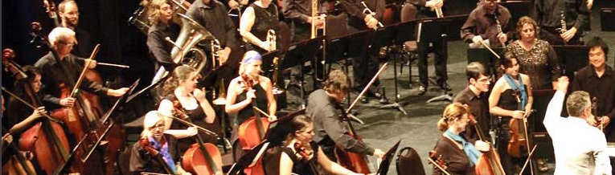

Fast becoming one of North Queensland’s cultural jewels the Barrier Reef Orchestra this year launches its 15th year of performing orchestral music throughout North Queensland. A community orchestra consisting of the finest musicians drawn from as far afield as Cairns and Mackay, it focuses on unique orchestral juxtapositions.
An outstanding performance of Beethoven’s 9th Symphony presented to a sell-out audience was recently followed by Peter Sculthorpe’s Mangroves, a collaboration with audio-visual artists, ABC radio and Umbrella Studios. The programs are testament to the orchestra’s willingness to embrace mainstream classical repertoire as well as opportunities for collaboration.
In 2015 the orchestra has been invited to perform in three festivals, and features in the Townsville Civic Theatre season. This is a first for the orchestra - underscoring its value to the community and highlighting its continued prominence in the cultural soundscape of North Queensland.

Become a Member or Player
Interested in becoming a member of, or a player in, the Orchestra?